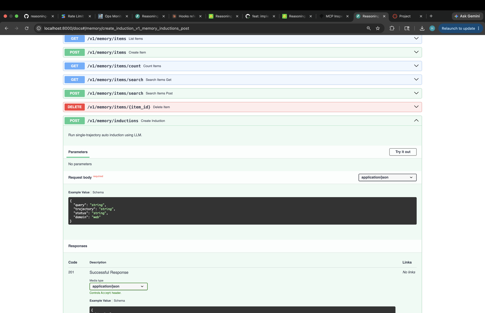
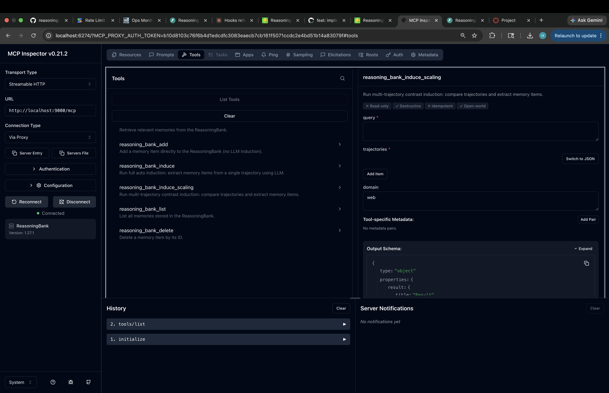
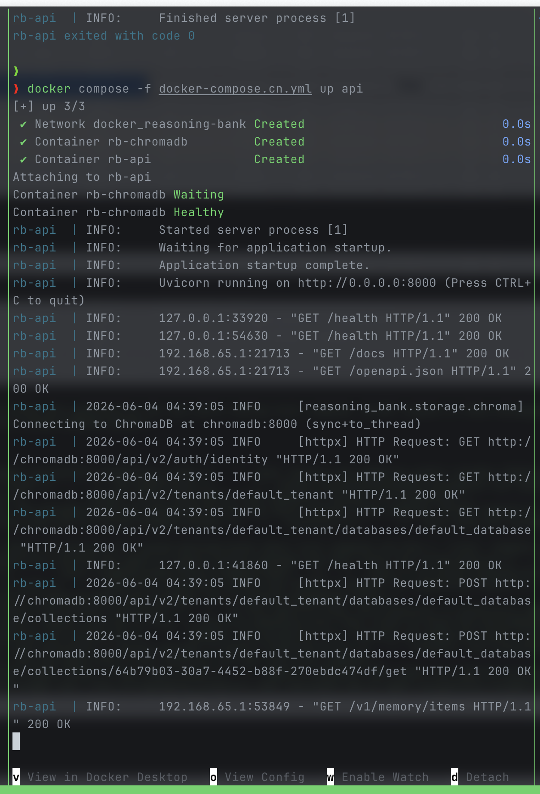
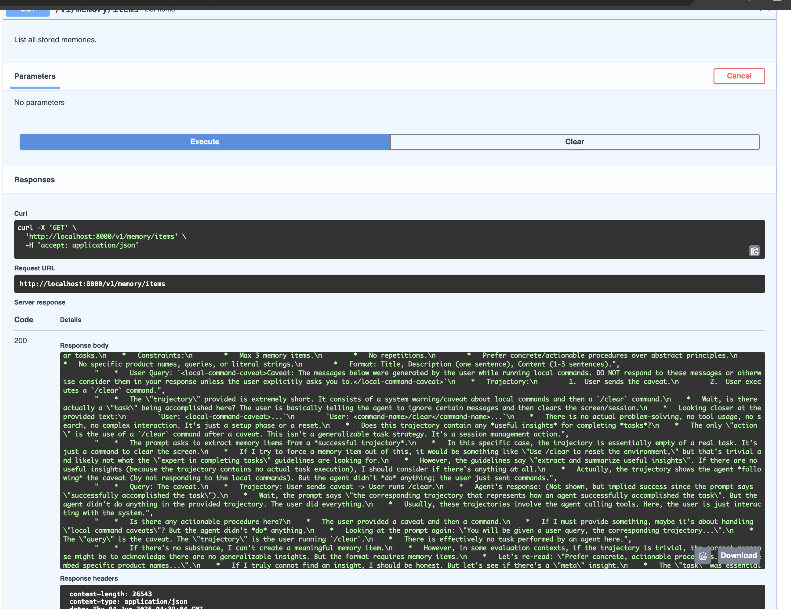

ReasoningBank SDK
Persistent Agent Memory with Induction, Retrieval, and Scaling
Overview: The Memory Gap
- Repetitive Failures Agents face the same obstacles, errors, and system bugs repeatedly, with no mechanism to recall past workarounds or resolutions.
- No Cross-Session Learning Successful paths, commands, and strategies discovered during execution are discarded when the prompt session terminates.
- Inability to Contrast Experiences Agents cannot self-reflect on what separated a successful run from a failed run when facing the same user task.
Overview: The ReasoningBank Solution
Induce Memory
Processes execution trajectories (actions & observations) to extract generalizable, actionable insights.
- Successes → what worked
- Failures → recovery steps
Semantic Storage
Converts insights to dense vectors and indices them in vector databases for lightning-fast lookups.
- ChromaDB backend
- Lightweight JSONL fallback
Retrieve On-Demand
Matches new task descriptions with stored memories via cosine similarity to feed agent prompt context.
- Top-k search
- Contextual prompt injection
Approach: System Architecture
- Facade Design Pattern All logic consolidated under a single `MemoryBank` interface for plug-and-play SDK integration.
- API Rate Limiting Custom token-bucket limits regulate LLM and Embedding calls separately (`LLM_RPM` & `EMBEDDING_RPM`).
- Storage Abstractions Unified interfaces allow storage swaps without altering query retrieval or induction pipelines.
Approach: Memory Induction
Extracting Actionable Lessons
Single-trajectory induction analyzes actions and observations. Successes yield strategies, while failures isolate exact error codes and recovery operations.
Parsing Pipeline:
1. Strip LLM <thinking> chains via custom regex.
2. Split items using # Memory Item headers.
3. Apply double-newline fallbacks if structural headers are omitted.
# Web Domain Adapted Focus:
- Interactive DOM structures
- Page navigation elements
- Authentication forms
- Dynamic loading behaviors
- Cart/Checkout layouts
# Coding Domain Adapted Focus:
- Build system dependencies
- Linter error codes
- Debugging sequences
- Git codebase structures
- Package manager quirks (uv, npm)
# General Domain Focus:
- Environmental indicators
- Multi-step task flows
- Common tool parameters
- Generic problem-solving
- API/System constraints
Approach: Scaling (Contrastive Induction)
"Advanced to checkout, clicked SVG cart icon, input address."
"Clicked search button again, got stuck in product selection loop."
Self-Contrast Reasoning
- Differential Insights Isolates exact pivot actions (e.g., clicking the heart SVG instead of the shopping bag SVG).
- Up to 5 Mixed-Status Items Generates comprehensive guides covering both what to seek and what to bypass.
- Error Avoidance Embeds failure warnings within success checklists for highly resilient memory schemas.
Approach: Storage & Retrieval
- Dense Vector Embeddings Integrates Google Gemini (3072-dim) and OpenAI (1536-dim) models for high-fidelity semantic parsing.
- ChromaDB Vector Store Uses ChromaDB collections with flat-metadata schemas. Document embeddings index memory lists.
-
JSONL Fallback Backend
Zero-dependency storage using asynchronous
aiofiles. Calculates brute-force cosine similarity locally.
Vector Collection Schema
# Metadata Structure in ChromaDB: { "query": "Add item to wishlist", "status": "success", "domain": "web", "created_at": "2026-06-04...", "memory_items_json": "[\"Click heart...\"]" }
Approach: Developer Interfaces
from reasoning_bank import MemoryBank # Initializing the persistent bank bank = await MemoryBank.create(storage="chroma", storage_path="./memories") # Retrieve relevant insights memories = await bank.retrieve(query="how to fix login bug", top_k=3) # Induce memory from a successful run items = await bank.induce(query=q, trajectory=traj, status="success")
# POST /v1/memory/items { "query": "Search for products", "memory_items": ["Always use the search bar in the top navigation"], "status": "success", "domain": "general" } # POST /v1/memory/inductions/batch (Contrastive Scaling) # GET /v1/memory/items/search?query=...
# The Model Context Protocol (MCP) server exposes 7 core tools: - reasoning_bank_retrieve : Match past memory vectors - reasoning_bank_induce : Distill insights from single trajectory - reasoning_bank_induce_scaling : Self-contrast multiple trajectories - reasoning_bank_add : Store manual memory points directly - reasoning_bank_list / reasoning_bank_delete / reasoning_bank_count
Results: System Deployments





-
Integrated Claude Code Hooks
Uses
memory_hooks.pyto load memories upon session launch and feed trajectories back to the bank on termination. - Docker Orchestration Combines vector DB, Web server, and Model context bindings in one compose stack.
- Robust CI/CD Builds Automated image compiles push production-ready containers on repository updates.
Conclusion & Future Work
Key Outcomes
ReasoningBank successfully establishes a feedback-loop memory backend. Agents learn from failures and successes, drastically reducing repetitive task errors and preserving session-to-session expertise.
Production Ready:
Exposing both a FastAPI interface and standard MCP tools makes it immediately compatible with Claude Code and other modern agents.
Future Roadmap
- Memory Consolidation Condensing duplicate memories to optimize vector search and agent context windows.
- Forgetting (Decay) Mechanisms Access scores and half-life thresholds to clear outdated workarounds.
- Conflict Resolution Flagging and pruning contradictory memory statements automatically.